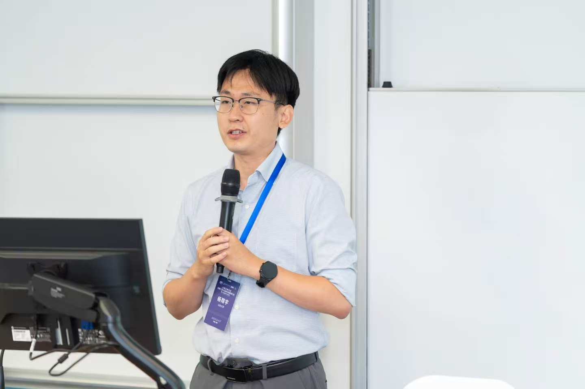

Xiangyu Yang (杨翔宇)
Tenure-Track Associate Researcher
School of Management
Shandong University
Room 609, Block B, Zhixin Building
27 Shanda Nanlu, Jinan, Shandong 250100, China
yxy@email.sdu.edu.cn

XY
Research Interests
- Monte Carlo simulation
- Stochastic optimization
- Data-driven analytics
- Healthcare
Academic Positions
Shandong University, School of Management
Jun 2022 – Present
- Tenure-Track Associate Researcher, Nov 2025 – Present
-
Special-Funded Postdoctoral Researcher,
Jun 2022 – Nov 2025
Advisor: Jianghua Zhang
Stony Brook University, Department of Applied Mathematics
& Statistics
Feb 2024 – Aug 2024
Visiting Scholar · Advisor: Jiaqiao Hu
Education
Ph.D., Management Science & Engineering,
Fudan University
Sep 2017 – Jun 2022
School of Management · Advisor: Jian-Qiang Hu
Bachelor, Engineering Management,
Shandong University
Sep 2013 – Jun 2017
School of Management · Minor in Financial Mathematics & Financial Engineering
Publications
* Corresponding author
Journal Articles
- Feng Xu, Jian-Qiang Hu, and Xiangyu Yang*. “Surrogate-Free Annealing Random Search for Continuous Stochastic Optimization.” Naval Research Logistics, accepted, 2026.
- Hao Cao, Jian-Qiang Hu*, Teng Lian, and Xiangyu Yang. “Infinitesimal Perturbation Analysis (IPA) Derivative Estimation with Unknown Parameters.” Automatica, 174, 112140, 2025.
- Xiangyu Yang, Jianghua Zhang*, Jian-Qiang Hu, and Jiaqiao Hu*. “Nonparametric Multi-Product Dynamic Pricing with Demand Learning via Simultaneous Price Perturbation.” European Journal of Operational Research, 319(1), 191–205, 2024.
- Xiangyu Yang, Jiaqiao Hu, and Jian-Qiang Hu*. “Relative Q-learning for Average-Reward Markov Decision Processes with Continuous States.” IEEE Transactions on Automatic Control, 69(10), 6546–6560, 2024.
- Jiaqiao Hu, Xiangyu Yang*, Jian-Qiang Hu, and Yijie Peng. “A Q-learning Algorithm for Markov Decision Processes with Continuous State Spaces.” Systems & Control Letters, 187, 105782, 2024.
- Yanfeng Wu, Jian-Qiang Hu, and Xiangyu Yang*. “Moment Estimators for Parameters of Lévy-driven Ornstein-Uhlenbeck Processes.” Journal of Time Series Analysis, 43(4), 610–639, 2022.
- Xiangyu Yang*, Yanfeng Wu, Zeyu Zheng, and Jian-Qiang Hu. “Method of Moments Estimation for Lévy-driven Ornstein-Uhlenbeck Stochastic Volatility Models.” Probability in the Engineering and Informational Sciences , 35(4), 975–1004, 2021.
- 吴燕丰，杨翔宇*，胡建强。 “仿射随机波动率模型的矩估计方法。” 《系统工程理论与实践》，录用，2025。
Conference Proceedings
- Xiangyu Yang, Jian-Qiang Hu, Jiaqiao Hu, and Yijie Peng. “Asynchronous Value Iteration for Markov Decision Processes with Continuous State Spaces.” Proceedings of the 2020 Winter Simulation Conference , Orlando, USA, 2856–2866, 2020.
Preprints & Working Papers
- Nonparametric Learning and Earning with One-Point Feedback under Nonstationarity. Joint work with Feng Xu, Jian-Qiang Hu, and Jiaqiao Hu. Submitted.
- Steady-State Quantile Optimization for Controlled Markovian Systems. Joint work with Teng Lian and Jian-Qiang Hu. Under review.
- Two-Timescale Stochastic Approximation for Smooth and Strongly-Convex-Strongly-Concave Stochastic Minimax Optimization: A New Convergence Rate. Sole author. Major revision.
- A Penalty-Based Exterior-Interior Point Method for Stochastically Constrained Simulation Optimization. Joint work with Jiaqiao Hu and Jianghua Zhang. Under review. [Slides, Jun 2025]
-
Optimizing Emergency Evacuation with Social Distancing
under Compound Disasters: A Multi-Alternative
Optimization Framework.
Joint work with Jianghua Zhang, Hongwei Shi,
and Zizhuo Wang.
Major revision
.
Best Paper Award (3rd Prize), 20th International Conference on Services Systems & Services Management.
Research Grants (as Principal Investigator)
| Project | Amount | Status |
|---|---|---|
| National Natural Science Foundation of China, Young Scientists Fund | ¥300,000 | Ongoing |
| China Postdoctoral Science Foundation, General Fund | ¥50,000 | Completed |
| Shandong Provincial Natural Science Foundation, Young Scientists Fund | ¥150,000 | Ongoing |
| Shandong Postdoctoral Science Foundation, Innovation Fund (Social Sciences) | ¥30,000 | Completed |
Teaching
Undergraduate-Level Courses
- Linear Algebra (线性代数), Spring 2026
- Frontiers of Supply Chain Management (供应链管理前沿), Spring 2026
Graduate-Level Courses
- System Modeling and Simulation (系统建模与仿真), Spring 2023, 2025, and 2026
- Data and Decision-Making Methods (数据与决策方法专题), Fall 2022, 2023, 2024, and 2025
Service & Honors
Service
- Session Chair, 2025 INFORMS International Meeting
- Reviewer: Journal of Simulation, American Control Conference (ACC), and Winter Simulation Conference (WSC)
Honors
- First Prize for Outstanding Postdoc of Shandong University (10 awardees annually)
- Outstanding Graduate of Fudan University
- Outstanding Teaching Assistant of Fudan University
Miscellaneous
- Programming & Software: Python, R, MATLAB, LaTeX
- Mathematics Genealogy
- Erdős Number: 4